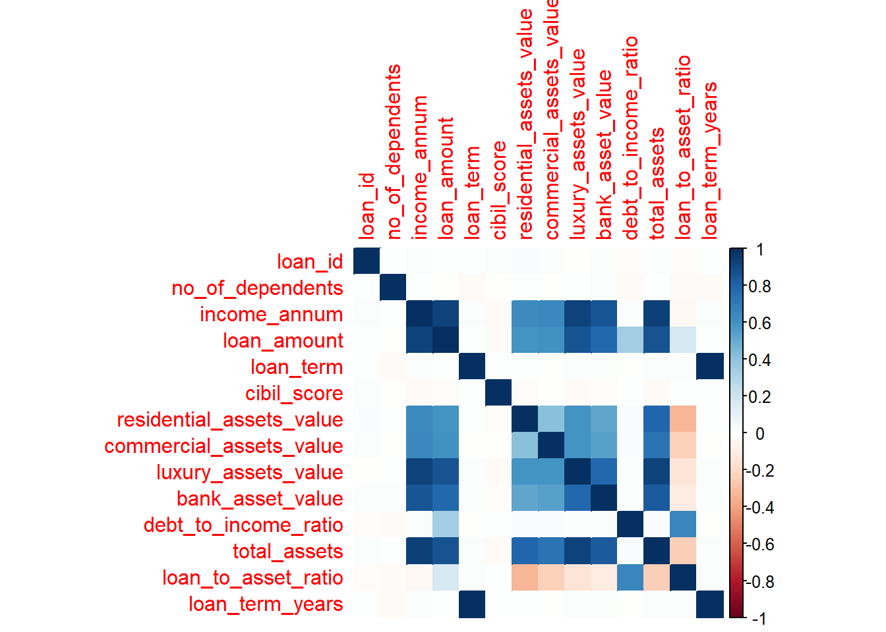

# Load required libraries
suppressWarnings(
suppressPackageStartupMessages({
library(tidyverse) # For data manipulation and visualization
library(caret) # For machine learning
library(ggplot2) # For advanced plotting
library(corrplot) # For correlation matrix
library(randomForest) # For Random Forest model
library(rpart) # For decision trees
library(rpart.plot) # For visualizing trees
library(ggthemes)
})
)Predictive Modeling for Loan Approval Classification
Introduction
A topic of matter :
Getting a loan approved is a big deal—whether it’s for buying a house, starting a business, or handling emergencies. Banks and lenders need a reliable way to decide who gets approved and who doesn’t. But how do they make these decisions?
This project explores loan approval prediction using real-world data. By analyzing factors like income, credit score (CIBIL), and assets, we can understand what makes an application successful. T his isn’t just useful for banks—it helps applicants know what lenders look for, improving their chances of approval.
Why was this project chosen ?
This topic was picked because:
✔ It’s practical—loan approvals affect real people.
✔ The data is rich—it includes financial and personal details.
✔ It’s a classic machine learning problem—great for learning predictive modeling.
Algorithms used :
We will be using two simple but powerful methods:
Decision Tree : Creates a flowchart-like structure of “if-else” rules to decide loan approval. It helps explain why an application was approved/rejected.
Random Forest : Builds hundreds of Decision Trees and combines their votes for a more accurate prediction. It’s definitely more accurate than a single Decision Tree.
Dataset Overview
We will be using the “loan_approval_dataset.csv” in this project. The dataset was extracted from the website “Kaggle” and it contains the following variables that will be used in the following sections :
loan_id : Unique ID for each application (just a reference number).
no_of_dependents : Number of people financially dependent on the applicant (more dependents = higher risk?).
education : “Graduate” or “Not Graduate” (does education affect approval?).
self_employed : “Yes” or “No” (self-employed applicants might face stricter checks).
income_annum : Annual Income of the Applicant (higher income = less risk?)
loan_amount : How much the applicant wants to borrow (bigger loans = riskier?).
loan_term : Loan duration in months (longer terms = more interest risk?).
cibil_score : Credit score of the Applicant (0-900; higher = more trustworthy borrower).
residential_assets_value : Value of home/property of the Applicant (more assets = safer for lenders?).
commercial_assets_value : Value of business-related assets of the Applicant (relevant for self-employed).
luxury_assets_value : Value of cars/jewelry of the Applicant (shows financial stability).
bank_asset_value : Cash/savings in the bank (liquid safety net for repayments).
loan_status : Target: “Approved” or “Rejected” (what we’re trying to predict!).
Methodology
1. Data Preparation
First, we cleaned the dataset to ensure accurate analysis. This included fixing negative asset values (like setting negative residential assets to zero) and handling missing data. We also created new features, such as the debt-to-income ratio (loan amount divided by annual income) and total assets (sum of all asset types). These steps help us work with reliable and meaningful data.
2. Exploratory Data Analysis (EDA)
Next, we explored the data to uncover patterns. We visualized relationships—like how income and loan amount affect approval rates—and compared approval chances for different groups (e.g., graduates vs. non-graduates). Key insights included spotting that higher CIBIL scores strongly correlate with approvals, giving us early clues on important predictors.
3. Model Selection & Training
We used two machine learning models:
Decision Tree: A simple, rule-based model that splits data into clear “if-else” decisions (e.g., “If CIBIL > 650, approve”). Easy to interpret but sometimes oversimplifies.
Random Forest: An ensemble of many decision trees that votes for the final outcome. More accurate but harder to explain.
Both models were trained on features like income, loan amount, and CIBIL score to predict approval status.
4. Model Evaluation
We compared the models using accuracy confusion matrices. Random Forest typically outperformed Decision Trees in predictive power, but the latter provided clearer rules for rejections. We also ranked features by importance (e.g., CIBIL score mattered most) to identify key approval drivers.
Model Implementation in R
Loading libraries :
We will load the libraries we will be using in this project :
Loading dataset :
We will load the dataset we will be using in this project :
# Read the dataset
loan_data <- read.csv("C:\\Users\\Mokhmed\\Downloads\\loan_approval_dataset.csv")
head(loan_data) loan_id no_of_dependents education self_employed income_annum loan_amount
1 1 2 Graduate No 9600000 29900000
2 2 0 Not Graduate Yes 4100000 12200000
3 3 3 Graduate No 9100000 29700000
4 4 3 Graduate No 8200000 30700000
5 5 5 Not Graduate Yes 9800000 24200000
6 6 0 Graduate Yes 4800000 13500000
loan_term cibil_score residential_assets_value commercial_assets_value
1 12 778 2400000 17600000
2 8 417 2700000 2200000
3 20 506 7100000 4500000
4 8 467 18200000 3300000
5 20 382 12400000 8200000
6 10 319 6800000 8300000
luxury_assets_value bank_asset_value loan_status
1 22700000 8000000 Approved
2 8800000 3300000 Rejected
3 33300000 12800000 Rejected
4 23300000 7900000 Rejected
5 29400000 5000000 Rejected
6 13700000 5100000 RejectedWe can view the structure of our dataset to get a clearer vision !
# View the structure
str(loan_data)'data.frame': 4269 obs. of 13 variables:
$ loan_id : int 1 2 3 4 5 6 7 8 9 10 ...
$ no_of_dependents : int 2 0 3 3 5 0 5 2 0 5 ...
$ education : chr " Graduate" " Not Graduate" " Graduate" " Graduate" ...
$ self_employed : chr " No" " Yes" " No" " No" ...
$ income_annum : int 9600000 4100000 9100000 8200000 9800000 4800000 8700000 5700000 800000 1100000 ...
$ loan_amount : int 29900000 12200000 29700000 30700000 24200000 13500000 33000000 15000000 2200000 4300000 ...
$ loan_term : int 12 8 20 8 20 10 4 20 20 10 ...
$ cibil_score : int 778 417 506 467 382 319 678 382 782 388 ...
$ residential_assets_value: int 2400000 2700000 7100000 18200000 12400000 6800000 22500000 13200000 1300000 3200000 ...
$ commercial_assets_value : int 17600000 2200000 4500000 3300000 8200000 8300000 14800000 5700000 800000 1400000 ...
$ luxury_assets_value : int 22700000 8800000 33300000 23300000 29400000 13700000 29200000 11800000 2800000 3300000 ...
$ bank_asset_value : int 8000000 3300000 12800000 7900000 5000000 5100000 4300000 6000000 600000 1600000 ...
$ loan_status : chr " Approved" " Rejected" " Rejected" " Rejected" ...summary(loan_data) loan_id no_of_dependents education self_employed
Min. : 1 Min. :0.000 Length:4269 Length:4269
1st Qu.:1068 1st Qu.:1.000 Class :character Class :character
Median :2135 Median :3.000 Mode :character Mode :character
Mean :2135 Mean :2.499
3rd Qu.:3202 3rd Qu.:4.000
Max. :4269 Max. :5.000
income_annum loan_amount loan_term cibil_score
Min. : 200000 Min. : 300000 Min. : 2.0 Min. :300.0
1st Qu.:2700000 1st Qu.: 7700000 1st Qu.: 6.0 1st Qu.:453.0
Median :5100000 Median :14500000 Median :10.0 Median :600.0
Mean :5059124 Mean :15133450 Mean :10.9 Mean :599.9
3rd Qu.:7500000 3rd Qu.:21500000 3rd Qu.:16.0 3rd Qu.:748.0
Max. :9900000 Max. :39500000 Max. :20.0 Max. :900.0
residential_assets_value commercial_assets_value luxury_assets_value
Min. : -100000 Min. : 0 Min. : 300000
1st Qu.: 2200000 1st Qu.: 1300000 1st Qu.: 7500000
Median : 5600000 Median : 3700000 Median :14600000
Mean : 7472617 Mean : 4973155 Mean :15126306
3rd Qu.:11300000 3rd Qu.: 7600000 3rd Qu.:21700000
Max. :29100000 Max. :19400000 Max. :39200000
bank_asset_value loan_status
Min. : 0 Length:4269
1st Qu.: 2300000 Class :character
Median : 4600000 Mode :character
Mean : 4976692
3rd Qu.: 7100000
Max. :14700000 Data Cleaning & Preprocessing :
We’ll handle missing values, negative asset entries, and convert categorical variables :
# Check for missing values
sum(is.na(loan_data))[1] 0# Fix negative asset values (we will replace with 0)
loan_data <- loan_data %>%
mutate(
residential_assets_value = ifelse(residential_assets_value < 0, 0, residential_assets_value),
commercial_assets_value = ifelse(commercial_assets_value < 0, 0, commercial_assets_value),
luxury_assets_value = ifelse(luxury_assets_value < 0, 0, luxury_assets_value),
bank_asset_value = ifelse(bank_asset_value < 0, 0, bank_asset_value)
)
# Convert categorical variables to factors
loan_data <- loan_data %>%
mutate(
education = as.factor(education),
self_employed = as.factor(self_employed),
loan_status = as.factor(loan_status)
)Feature Engineering :
Now, we’ll create new meaningful features :
loan_data <- loan_data %>%
mutate(
debt_to_income_ratio = loan_amount / income_annum,
total_assets = residential_assets_value + commercial_assets_value + luxury_assets_value + bank_asset_value,
loan_to_asset_ratio = loan_amount / total_assets,
loan_term_years = loan_term / 12 # Convert months to years
)Exploratory Data Analysis (EDA) :
Let’s visualize key relationships !
Approval Rate by Education
ggplot(loan_data, aes(x = education, fill = loan_status)) +
geom_bar(position = "fill") +
labs(title = "Loan Approval Rate by Education", y = "Proportion") +
theme_minimal()Interpretation : Loan approval rates (~60%) consistently outweigh rejections (~40%) across both education levels, suggesting education alone may not significantly influence approval decisions. The near-identical patterns for graduates and non-graduates imply lenders prioritize other factors (e.g., income or credit history) over formal education in this dataset.
Income vs. Loan Amount (Approved vs. Rejected) :
ggplot(loan_data, aes(x = income_annum, y = loan_amount, color = loan_status)) +
geom_point(alpha = 0.6) +
labs(title = "Income vs. Loan Amount by Approval Status") +
theme_minimal()Interpretation : While higher-income applicants naturally request larger loans (expected behavior), the parallel trend between approved and rejected cases reveals that income alone doesn’t guarantee approval. This suggests lenders weigh additional risk factors (e.g., debt-to-income ratio or credit history) when making decisions, even for high earners.
CIBIL Score Distribution :
ggplot(loan_data, aes(x = cibil_score, fill = loan_status)) +
geom_density(alpha = 0.5) +
labs(title = "CIBIL Score Distribution by Loan Status") +
theme_minimal()Interpretation : CIBIL scores act as a decisive gatekeeper: approvals cluster tightly above 650 (peaking near 750), while rejections dominate the sub-600 range. The clear 550-score cutoff suggests this is a hard threshold for lenders, with marginal approvals between 550-650 likely requiring exceptional justification from other factors.
Correlation Matrix :
numeric_data <- loan_data %>%
select(where(is.numeric))
cor_matrix <- cor(numeric_data)
corrplot(cor_matrix, method = "color")
Interpretation : The following insights could be extracted from the correlation matrix :
Wealth-to-Income Pipeline: The strong positive correlation (r approximately equal to 0.8) between total_assets and income_annum confirms applicants with higher incomes systematically accumulate more assets—a logical wealth-building pattern.
Loan Sizing Logic: The equally strong tie (r approximately equal to 0.8) between loan_amount and income_annum reveals lenders likely use income as the primary anchor for determining loan limits, following standard underwriting practices.
Hidden Risk Signal: debt_to_income_ratio shows no correlation with income_annum (r approximately equal to 0), implying high earners aren’t automatically more responsible—some proportionally over-leverage themselves, requiring manual risk review.
Machine Learning Model Development :
In this phase, we will:
Split the dataset into training and test sets to ensure unbiased evaluation.
Train two distinct models on the training data.
Compare their performance using accuracy and other metrics on the test set.
Splitting Data into Train & Test Sets
set.seed(123)
train_index <- createDataPartition(loan_data$loan_status, p = 0.8, list = FALSE)
train_data <- loan_data[train_index, ]
test_data <- loan_data[-train_index, ]Decision Tree Model
# Train the decision tree
tree_model <- rpart(
loan_status ~ .,
data = train_data,
method = "class",
control = rpart.control(
minsplit = 20, # Minimum 20 observations to split
minbucket = 10, # Minimum 10 observations in terminal nodes
cp = 0.01, # Complexity parameter
maxdepth = 2 # Limit tree depth
)
)
# Tree visualization
rpart.plot(tree_model,
type = 4, # Show all node labels
extra = 104, # Display probabilities and percentages
box.palette = list("green3", "red2"), # Approval/Rejection colors
nn = TRUE, # Show node numbers
fallen.leaves = FALSE,
shadow.col = "gray",
branch.lty = 3,
tweak = 1.1) # Font size adjustmentThis decision tree shows that CIBIL score is the most influential factor. A score ≥ 550 leads to an almost certain approval (99%), while < 550 results in a 90% rejection rate.
For applicants with CIBIL < 550, shorter loan terms (< 5 years) increase approval chances (53%), whereas longer terms (≥ 5 years) lead to automatic rejection (100%).
# Verify the splits
print(tree_model)n= 3416
node), split, n, loss, yval, (yprob)
* denotes terminal node
1) root 3416 1291 Approved (0.622072600 0.377927400)
2) cibil_score>=549.5 1987 10 Approved (0.994967287 0.005032713) *
3) cibil_score< 549.5 1429 148 Rejected (0.103568929 0.896431071)
6) loan_term< 5 280 132 Approved (0.528571429 0.471428571) *
7) loan_term>=5 1149 0 Rejected (0.000000000 1.000000000) *# Predict and evaluate
test_data$tree_pred <- predict(tree_model, test_data, type = "class")
tree_cm <- confusionMatrix(test_data$tree_pred, test_data$loan_status)
print(tree_cm)Confusion Matrix and Statistics
Reference
Prediction Approved Rejected
Approved 531 39
Rejected 0 283
Accuracy : 0.9543
95% CI : (0.938, 0.9673)
No Information Rate : 0.6225
P-Value [Acc > NIR] : < 2.2e-16
Kappa : 0.9003
Mcnemar's Test P-Value : 1.166e-09
Sensitivity : 1.0000
Specificity : 0.8789
Pos Pred Value : 0.9316
Neg Pred Value : 1.0000
Prevalence : 0.6225
Detection Rate : 0.6225
Detection Prevalence : 0.6682
Balanced Accuracy : 0.9394
'Positive' Class : Approved
Random Forest Model
# Train the forest
rf_model <- randomForest(
loan_status ~ .,
data = train_data,
ntree = 200, # Number of trees
importance = TRUE # To check feature importance
)
# Predict and evaluate
test_data$rf_pred <- predict(rf_model, test_data)
rf_cm <- confusionMatrix(test_data$rf_pred, test_data$loan_status)
print(rf_cm)Confusion Matrix and Statistics
Reference
Prediction Approved Rejected
Approved 531 1
Rejected 0 321
Accuracy : 0.9988
95% CI : (0.9935, 1)
No Information Rate : 0.6225
P-Value [Acc > NIR] : <2e-16
Kappa : 0.9975
Mcnemar's Test P-Value : 1
Sensitivity : 1.0000
Specificity : 0.9969
Pos Pred Value : 0.9981
Neg Pred Value : 1.0000
Prevalence : 0.6225
Detection Rate : 0.6225
Detection Prevalence : 0.6237
Balanced Accuracy : 0.9984
'Positive' Class : Approved
Models Comparison
# Compare Decision Tree vs. Random Forest
cat(sprintf(
"Decision Tree Accuracy: %.1f%%\nRandom Forest Accuracy: %.1f%%",
tree_cm$overall[1] * 100,
rf_cm$overall[1] * 100
))Decision Tree Accuracy: 95.4%
Random Forest Accuracy: 99.9%Feature Importance
# Decision Tree Importance
tree_imp <- tree_model$variable.importance %>%
as.data.frame() %>%
rownames_to_column("Feature") %>%
rename(Importance = ".")
# Random Forest Importance
rf_imp <- importance(rf_model) %>%
as.data.frame() %>%
rownames_to_column("Feature") %>%
arrange(desc(MeanDecreaseGini))
# Plot comparison
ggplot() +
geom_col(data = tree_imp, aes(x = Feature, y = Importance), fill = "skyblue") +
geom_col(data = rf_imp, aes(x = Feature, y = MeanDecreaseGini), fill = "salmon", alpha = 0.5) +
labs(title = "Feature Importance Comparison") +
theme_minimal() +
theme(axis.text.x = element_text(angle = 45, hjust = 1, vjust = 1, size = 10))The feature importance plot ranks predictors based on their influence on loan approval decisions. The top driver in our dataset is the CIBIL Score, reinforcing our previous inferences. The debt-to-income ratio and loan term follow with moderate importance, while other features contribute weakly and may not be as useful for future predictions.
Models Evaluation Interpretation
1. Accuracy :
Decision Tree: 95.43% – Performs well but has some misclassifications.
Random Forest: 99.88% – Near-perfect accuracy, significantly reducing errors.
2. Sensitivity (Recall) : Both models have 100% sensitivity, meaning they correctly classify all approved cases.
3. Specificity :
Decision Tree: 87.89% – Some false positives (approved when they should be rejected).
Random Forest: 99.69% – Almost perfect, correctly rejecting nearly all unqualified cases.
4. Precision (Positive Predictive Value) :
Decision Tree: 93.16% – Some approvals are incorrect.
Random Forest: 99.81% – Nearly perfect, minimal incorrect approvals
5. Negative Predictive Value (NPV) : Both models have 100% NPV, meaning all rejected loans were correctly classified.
6. Balanced Accuracy :
Decision Tree: 93.94% – Still strong but slightly lower due to false approvals.
Random Forest: 99.84% – Near-perfect balance between sensitivity and specificity.
7. Kappa Score :
Decision Tree: 0.9003 – Strong agreement between predicted and actual values.
Random Forest: 0.9975 – Almost perfect agreement, indicating superior reliability.
Insights & Recommendations
Key Insights :
- CIBIL Score is the Most Critical Factor : Loan approvals are heavily influenced by credit score. Applications with CIBIL scores above 650 have a high approval rate, while those below 550 face almost certain rejection.
- Income Alone Doesn’t Guarantee Approval : Higher-income applicants tend to request larger loans, but approval isn’t solely based on income. Lenders also consider factors like debt-to-income ratio and credit history to assess risk.
- Debt-to-Income Ratio Matters : Applicants with a high debt-to-income ratio (large loan compared to income) have lower approval chances, indicating that lenders prefer borrowers with manageable financial obligations.
- Loan Term Length Affects Approval Chances : Shorter loan terms (less than 5 years) increase the likelihood of approval, especially for applicants with borderline CIBIL scores (550-650). Longer terms are riskier and often lead to rejection.
- Assets Provide Additional Security : Applicants with higher total assets (residential, commercial, luxury, and bank assets combined) tend to get approved more often, as they offer better collateral for lenders.
Recommendations :
For Loan Applicants :
Maintain a CIBIL Score Above 650 : Regularly check and improve credit score by paying bills on time and reducing outstanding debts.
Keep a Low Debt-to-Income Ratio : Avoid applying for a loan amount that is disproportionately high compared to income.
Opt for Shorter Loan Terms : Choosing a loan term of 5 years or less can increase approval chances, especially for borderline applicants.
Increase Savings & Assets : Higher bank balances and assets reduce risk perception, making approval more likely.
For Lenders :
Prioritize Credit Score & Debt Ratio : Set stricter thresholds for low CIBIL scores and high debt-to-income ratios to reduce defaults.
Consider a Tiered Approval System : Introduce flexible approval criteria for applicants with moderate CIBIL scores (550-650) if they have strong assets or shorter loan terms.
Refine Loan Offer Strategies : Offer lower interest rates or incentives for applicants with strong financial stability, improving customer retention while minimizing risk.
By implementing these recommendations, both applicants and lenders can make more informed decisions, improving the loan approval process for all parties.